Messages et appels chiffrés via Tor. Une IA qui tourne sur le téléphone. Radio, maillage et lumière quand le réseau s’éteint. Conçu pour ceux que les censeurs préféreraient ne pas entendre.
Sans numéro de téléphoneAppels post-quantiquesCartes hors ligneRadio LoRa et VHFEffacement panique
MATRICE DE DÉPLOIEMENT TACTIQUE // NŒUDS DE CONNEXION EXTERNES
SOURCE CENTRALE // VERSIONS SIGNÉES
Q-P1NG CORE & PRORÉPARTITEUR ACTIF
CORE GRATUIT • PRO 9,99 € • ZÉRO TÉLÉMÉTRIE • MISES À JOUR VÉRIFIÉES
NŒUD 01 // SITE WEBMISE À JOUR AUTO
APK du site web
Core gratuit · Pro avec licence
APK signés depuis qp1ng.com : Core gratuit, Pro avec toutes les fonctions, shell Linux inclus. Une mise à jour ne s’installe que si taille, empreinte et signature correspondent.
Core et Pro en deux applis Play, installées et mises à jour par Google Play. Pro sur Play a toutes les fonctions Pro sauf le shell Linux.
CORE : com.qp1ng.android
PRO : com.qp1ng.android.pro
CIBLE : Android 8.0+
Core · bientôtPro · bientôt
NŒUD 03 // LICENCE PRO9,99 € UNE FOIS
Q-P1NG Pro
Licence pour l’APK du site web
IA sur l’appareil, radio, cartes hors ligne, coffre Bitcoin et plus encore. Paiement en Bitcoin, carte bientôt. Sans compte : la clé est vérifiée hors ligne.
Ne croyez pas, vérifiez. Les actions risquées attendent votre OK, sauf si une de vos règles dit d’y aller.
ÉTAT EN DIRECT - ÉTAT LOCAL CHIFFRÉ - TOR EN OPTION - ÉMISSION RADIO SUR CONFIRMATION
NŒUD DE TERRAINCONTRÔLE QP1NG
PRÊT
ROUTE ONIONCOFFRE CHIFFRÉNOYAU IA LOCAL
01Protocole de sécurité
Barrières OPSEC, verrous du coffre, contrôle des métadonnées
02Q-Brain
Modèles locaux, outils, règles du bac à sable
03Ghost Comms
Tor, discipline des relais, flux d’urgence
04RadioBridge
AIOC, CM108, messagerie de labo VOX Lite
root@quantum-node:~
VÉRIF. ROUTE RXCOFFRE SCELLÉÉMISSION RADIO SUR CONFIRMATION
CONTRÔLE DE MISSION//POURQUOI QP1NG EXISTE
Mission
L’information veut être libre. Vous aussi.
La libre parole exige des outils qui résistent à la pression. Q-P1NG réunit communications chiffrées, collecte de preuves et travail hors ligne dans un téléphone : informez, organisez, publiez quand on veut vous faire taire.
Sans numéro de téléphoneLes clés restent localesVous validez le risqueReplis hors ligneÉmission radio sur votre OK
MODÈLE OPÉRATIONNELPrésumez l’exposition. Limitez le rayon d’impact.
EXPOSITIONRéduite par le routage et la politique de rétention
REPRISEPanique, effacement, leurre et continuité hors ligne
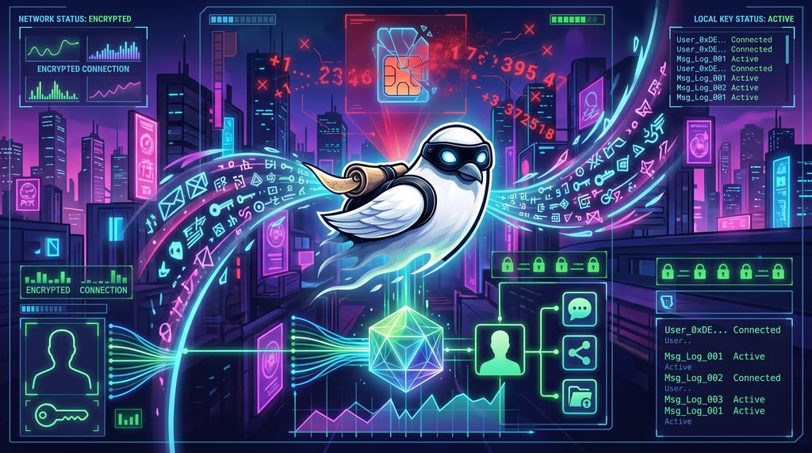
ID::LOCAL
01
Pas de numéro. Pas de compte.
Votre identité est une paire de clés née sur votre téléphone. Échangez vos contacts par QR ou NFC, vérifiez-les, puis parlez.
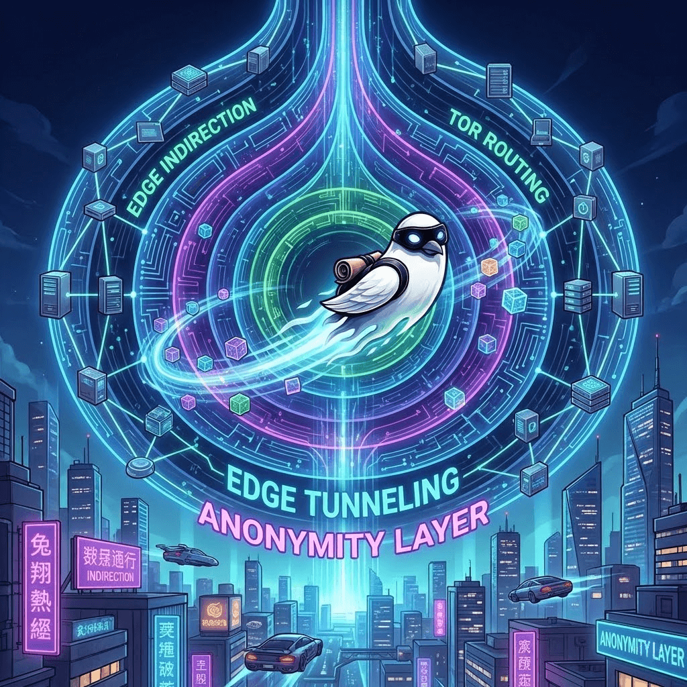
ROUTE::TOR
02
Parlez via Tor
Messages et appels passent par les services onion de Tor, chiffrés de bout en bout. Vous décidez combien de temps vit l’historique.
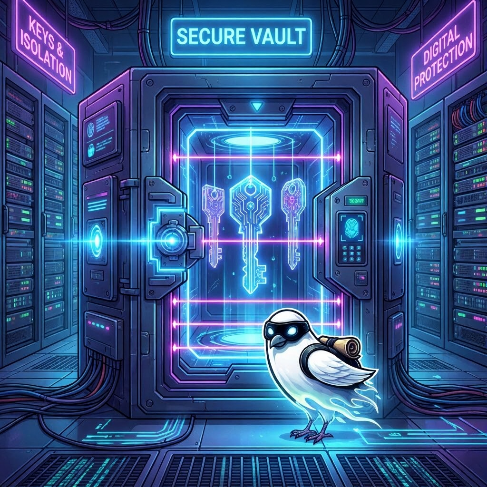
COFFRE::VERROUILLÉ
03
Vos preuves restent à vous
Notes et fichiers dorment dans un coffre chiffré. Retirez les métadonnées et floutez les visages avant que rien ne quitte le téléphone.
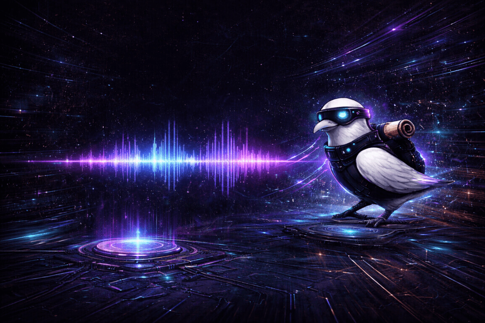
IA::CONTRÔLÉE
04
IA locale. Vos décisions.
Q-Brain et Whisper (Pro) tournent sur le téléphone avec les modèles que vous téléchargez. Le cloud seulement si vous ajoutez votre propre clé.
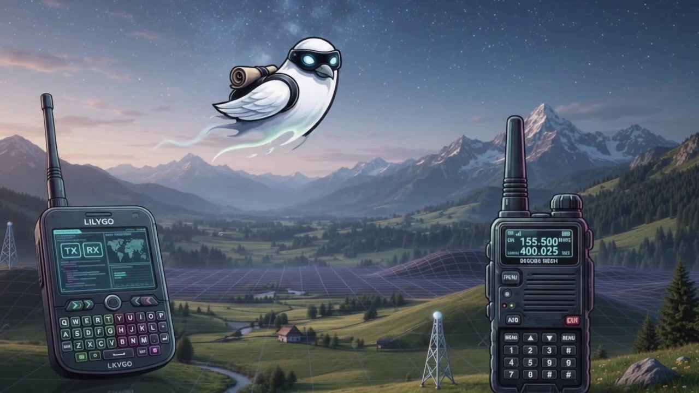
REPLI::TERRAIN
05
Prêt pour le black-out
Prenez les packs de cartes hors ligne (Pro) avant le black-out. Q-Geo continue de guider et de signaler quand les données sont coupées ou censurées.
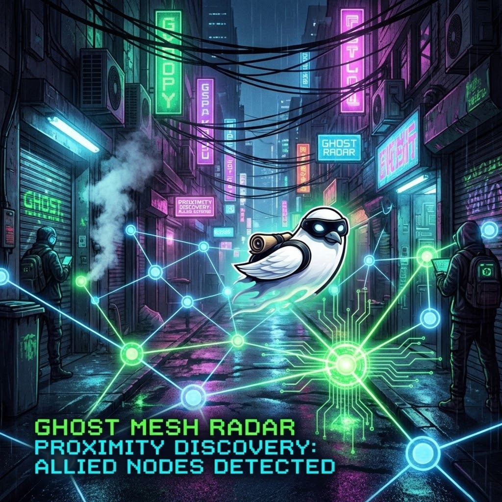
LABO::SÛR
06
Au-delà d’Internet
Bluetooth, Wi-Fi local et QR animés font passer les données d’un téléphone à l’autre. LoRa et radio VHF (Pro) exigent le matériel.
DÉROULÉ DE TERRAINDe la pression à l’action maîtrisée
01
Observer
Lisez état du réseau, risque de l’appareil et routes ouvertes avant tout envoi.
02
Décider
IA locale, notes et scénarios aident ; les actions risquées attendent votre OK.
03
Transmettre
Choisissez Tor, relais, hors ligne ou radio selon le modèle de menace, pas par confort.
04
Récupérer
Limites de rétention, verrous du coffre, leurres et effacement panique réduisent ce qui reste.
NOTRE PRINCIPE DIRECTEUR
Questionnez le pouvoir. Défendez la vie privée. Faites circuler le savoir. Une limite honnête : aucune appli ne protège un téléphone déjà tenu par un logiciel espion.
ARCHITECTURE SYSTÈME//ANDROID + EDGE + RUNTIME DE TERRAIN
SystèmeArchitecture
Votre téléphone est le serveur.
Ni serveur de comptes, ni coffre dans le cloud. Clés, données et IA vivent sur l’appareil ; Tor, relais et radio sont des routes à votre choix.
NOYAUNoyau Android
Kotlin et Compose, avec des moteurs C++ pour l’IA, l’audio et la radio.
ÉTATStockage local
Base SQLCipher et clés Keystore, derrière votre PIN ou votre biométrie.
ROUTERoutes réseau
Tor intégré, un relais onion pour les contacts hors ligne, des liaisons de proximité hors réseau.
AIPermissions de l’IA
Chaque appel d’outil IA suit une règle : exécuter, bloquer ou vous demander.
02Noyau de sécuritéIdentité, coffre, verrous, effacement et leurres
03Runtime Q-BrainModèles locaux, fournisseurs optionnels et règles d’outils
04Outils de terrainCaméra, notes, cartes, dictée et outils radio
BARRIÈRE DE RÈGLES
CHIFFRER
ROUTE
CHEMINS EDGE / TERRAINConnexions optionnelles
05Connecteur TorTor 0.4.9 intégré, services onion
06Relais de messagesEnveloppes scellées pour les contacts hors ligne, sur activation
07Échange hors ligneContacts QR/NFC, maillage Bluetooth et Wi-Fi local
08Labo RadioBridgeCâbles AIOC et CM108 vers votre propre radio
IDENTITÉ
Clés sur votre appareil
Une identité RSA-2048 dans l’Android Keystore. Ni numéro, ni e-mail, ni compte.
STOCKAGE
Stockage chiffré de l’appli
Base SQLCipher, coffre AES-256-GCM, sauvegardes scellées avec Argon2id. PIN ou biométrie pour ouvrir.
TRANSPORT
Les connexions que vous choisissez
Tor, relais onion, liaisons de proximité ou radio. L’envoi ne prend que les routes que vous autorisez.
AUTOMATISATION
Permissions des outils
Chaque appel d’outil passe d’abord par vos règles : exécuter, bloquer ou vous demander.
OBSERVABILITÉ
Un état lisible
Des rapports clairs disent pourquoi une requête a échoué, ce qui a été bloqué et ce qui manque.
RÉSILIENCE
Travailler malgré les coupures
Notes, packs de cartes et modèles locaux continuent de fonctionner sans réseau.
ENTRÉEMessage, note, voix ou scénario
RÈGLESVérifier les règles et les permissions requises
PROTÉGERChiffrer, caviarder ou garder en local
ROUTEUtiliser une connexion disponible et autorisée
NETTOYAGEAppliquer la rétention et le verrouillage
PHILOSOPHIE D’INGÉNIERIE
Connaissez vos outils. Maîtrisez vos routes. Votre appareil, vos réglages et chaque service auquel vous vous connectez font partie du modèle de menace : choisissez-les en conséquence.
PROTOCOLE DE SÉCURITÉ//ARCHITECTURE OPSEC AVANT TOUT
Protocole de sécurité
Présumez le réseau hostile. Construisez en conséquence.
Conçu pour un réseau hostile, un téléphone saisi et un opérateur sous pression. Identité, transport, stockage, métadonnées, automatisation et reprise sont des couches séparées : une défaillance n’ouvre pas le reste.
OPSEC avant toutTor intégréÉtat local chiffréValidation humaineEffacement panique
QP1NG EN ACTION · THÈME FALLOUTVotre identité. Vos connexions.
VRAIE APPLI
01Chat Ghost et QR d’identité animé
02Maillage Bluetooth et invitation Wi-Fi locale
03Vérification Tor et protocoles d’accès
QP1NG / FALLOUT / 00:32 · 2×
Du camouflage calculatrice au circuit Tor vérifié : découvrez l’application en action.Cliquer pour lire
Démo Android avec attentes raccourcies. Contact fictif et brouillon non envoyé. Recherche Bluetooth et invitation Wi-Fi sans second appareil. Aucun transfert, appel ni effacement d’urgence.
01
Isolation de l’identité
Routage onion Tor, contrôles de route et Ghost Mode distendent les liens entre appareil, réseau et identité.
TorOnionGhost Mode
02
État local chiffré
Clés Keystore, préférences chiffrées et bases SQLCipher gardent les données locales scellées derrière des clés liées à l’appareil.
KeystoreAESSQLCipher
03
Contrôle des métadonnées
Les images partagées perdent EXIF et GPS ; la protection d’écran bloque aperçus et captures d’écran de l’appli.
EXIFNettoyageProtection d’écran
04
Validations humaines
Les actions de Q-Brain et d’ActionForge sont classées par risque ; écritures, réseau, matériel et étapes destructives peuvent demander d’abord.
LectureÉcritureRéseauMatériel
05
Règles du bac à sable
Le bac à sable Linux (Pro du site web) vérifie mode, chemins, règles réseau et motifs dangereux avant qu’une commande ne s’exécute.
Liste blancheDemanderMode labo
06
Commandes d’urgence
Armez verrous et effacement panique à l’avance. Un effacement ne rappelle pas les copies déjà envoyées ; la mémoire flash ne promet rien.
PIN de contrainteEffacementDestruction des clés
DÉROULÉ OPSEC
Avant qu’un contenu ne quitte l’appareil
01Capturer
Dictée sécurisée, notes, coffre ou import de fichiers.
02Inspecter
Q-Brain, scan des métadonnées, analyse des liens et des routes.
03Assainir
Retirer les métadonnées, caviarder, compresser le contexte et vérifier la cible.
04Transmettre
Vérifier route, destinataire et les confirmations exigées par vos règles.
POSTURE LOCALE
Blocage des captures d’écran
Mot de passe maître / verrou biométrique
Coffre et notes chiffrés
Rétention et effacement contrôlés
Ghost Mode pour les sessions volatiles
ZERO TRUST
Gardez l’état sensible en local et sachez ce que chaque procédure expose. Les appels d’outils suivent vos règles. Réglez commandes d’urgence et automatisations avec soin : une règle activée agit sans redemander.
DÉFENSE ANTI-FORENSIQUE//CLAVIER SANS TÉLÉMÉTRIE ET PIN DE CONTRAINTE
Anti-forensique et clavier Quantum
Le bon PIN raconte la mauvaise histoire.
Aux frontières, on fouille les téléphones. Répondez avec un clavier sans télémétrie, une couverture calculatrice, des PIN leurre et de contrainte, et un effacement qui détruit d’abord les clés.
Clavier Quantum Couverture calculatrice PIN leurre et de contrainte Presse-papiers auto-effacé Effacement sur 37 domaines Bac à sable Alpine (Pro)
APP ANDROID · CONFIDENTIALITÉ EN ACTION
Choisissez ce que l’écran révèle.
Secouez pour passer à un écran de couverture. Verrouillez les sections privées par mot de passe maître. Gardez vos outils sous la main avec Quantum Keyboard.
01Secousse : météo, calculatrice, puzzle ou liste de courses
02Mot de passe maître : ouvrir les notes privées
03Identifiants distincts : principal, leurre et contrainte
ANDROID / FALLOUT / 00:58
Secouez pour passer à un écran de couverture. Verrouillez les sections privées par mot de passe maître. Gardez vos outils sous la main avec Quantum Keyboard.Cliquer pour lire
Enregistré dans la démo Android avec des données d’exemple et une secousse émulée. Configuration des identifiants présentée ; aucun effacement exécuté. Attentes raccourcies. Montage avec coupes et séquences accélérées.
APP ANDROID · PREMIÈRE CONFIGURATION
Trois PIN. Une calculatrice.
Choisissez un PIN principal, un PIN d’urgence et un PIN leurre, puis activez Quantum Keyboard. Ensuite, l’app s’ouvre derrière une vraie calculatrice : tapez le PIN puis =.
01PIN principal, d’urgence et leurre
02Quantum Keyboard, activé dans les réglages Android
03Calculatrice de couverture : PIN puis = pour entrer
ANDROID / FIRST SETUP / 01:31
Choisissez un PIN principal, un PIN d’urgence et un PIN leurre, puis activez Quantum Keyboard. Ensuite, l’app s’ouvre derrière une vraie calculatrice : tapez le PIN puis =.Cliquer pour lire
Enregistré sur un émulateur Android avec des PIN de démonstration. Codes d’urgence et leurre seulement configurés ; rien n’a été déclenché. Saisie et attentes accélérées ; deux prises de la même configuration assemblées.
TÉLÉMÉTRIE DU CLAVIER0.00 B / sAucune stat ; outils web sur appui
AUTO-EFFACEMENT DU PRESSE-PAPIERS30-60 SECONDESAES-256-GCM en mémoire, puis effacé
DOMAINES EFFACÉS37 DOMAINESClés Keystore d’abord, puis le stockage
BAC À SABLE LINUXPROOT USERLANDAlpine, 50+ outils optionnels · Pro du site web
ANDROID INPUTMETHODSERVICE
Tapez sans public
Un clavier système sans statistiques. Les outils web ne se connectent que quand vous les touchez.
📐
Couverture calculatrice
Touchez Calc et les touches deviennent une vraie calculatrice (KeyboardCalculator.kt). L’appli entière peut aussi se cacher derrière une calculatrice.
✂️
Presse-papiers auto-effacé
Mots de passe générés et sorties d’outils restent chiffrés AES-256-GCM en mémoire, effacés par minuterie après 30 ou 60 secondes.
🎙️
Dictée Whisper et collage depuis le coffre
Avec Pro, la touche micro dicte hors ligne avec Whisper. L’outil Coffre colle les identifiants depuis Q-Pass chiffré.
MÉMOIRE SÉCURISÉE DU PRESSE-PAPIERSTAMPON : CHIFFRÉ (AES-256)
[ENC_PAYLOAD: 8f2a...9c41]
IME: com.qp1ng.android.ui.keyboard
CHAMP ACTIF :
CONFIDENTIAL_PAYLOAD_READY_
1337 * 42
56154
TROIS PIN, TROIS ISSUES
Donnez-leur un leurre
Refuser de déverrouiller peut vous valoir une détention. Définissez trois PIN : l’un ouvre l’appli, l’autre un leurre (météo, liste de courses, calculatrice ou jeu), le troisième efface en silence :
1337VRAI PINOuvre la vraie appli et ses données chiffrées.
9999LEURRE : MÉTÉOAffiche une appli météo avec des prévisions d’exemple hors ligne.
4040LEURRE : LISTE DE COURSESAffiche une banale liste de courses de supermarché.
0000PIN DE CONTRAINTEFerme l’appli et efface en arrière-plan, clés d’abord.
SAISISSEZ LE PIN D’ACCÈS :
EN ATTENTE // CLIQUEZ UN PRÉRÉGLAGE OU LE PAVÉ
Q-P1NG // PORTE SÉCURISÉE
🔒
EN ATTENTE DU PIN
Touchez un bouton ou tapez un PIN d’exemple.
● COFFRE ACTIFSESSION DÉVERROUILLÉE
LA VRAIE APPLI
IDENTITÉ DE MAILLAGEed25519:7a4f..9b21
TOR SOCKS5EN LIGNE (SOCKS LOCAL)
BASE SQLCIPHERDÉVERROUILLÉE (AES-256-CBC)
COFFRE BITCOINDESCRIPTEURS PRÊTS
ROOTFS DU BAC À SABLEINSTALLÉ (files/alpine)
Francfort-sur-le-MainPrévisions d’exemple
⚙️
⛅
18°C
Partiellement nuageux
HUMIDITÉ62%
VENT14 km/h
INDICE UV3 (Mod.)
PRESSION1018 hPa
14:00⛅ 19°
16:00🌧️ 16°
18:00⛅ 15°
20:00🌙 13°
ÉCRAN LEURRE // DONNÉES D’EXEMPLE HORS LIGNE
🛒 Courses de la famille
Encore 3 articles
TOTAL ESTIMÉ :25,80 €
ÉCRAN LEURRE // LISTE DE COURSES
APPLI FERMÉE
L’appli se ferme aussitôt ; l’effacement tourne en arrière-plan.
[DURESS PIN // SILENT WIPE]> Suppression des clés Keystore : TERMINÉ> Arrêt de Tor, des appels et de l’IA locale : TERMINÉ> Écrasement, vérification et suppression des fichiers : TERMINÉ> Arrêt du processus de l’appli (PID 19284)
ARCHITECTURE DE SÛRETÉ // PANICWIPEMANAGER.KT
Les clés d’abord, puis tout le reste
AFFICHER :
La mémoire flash ne promet rien : Q-P1NG détruit donc d’abord les clés de l’Android Keystore, puis écrase, vérifie et supprime sur 37 domaines :
CRITIQUEKEYSTORE
Clés Keystore
Clés de l’Android Keystore qui protègent la phrase de passe de la base et les seeds du portefeuille.
CRITIQUEBASE DE DONNÉES
Base SQLCipher
La base principale chiffrée : chats, contacts, pairs, bases annexes.
CRITIQUEIDENTITÉ
Identité de l’appareil et des pairs
Identité RSA-2048 dans le Keystore, clés de maillage Ed25519/X25519, registres de confiance des pairs.
CRITIQUEBITCOIN
Clés privées et seeds BTC
Phrases BIP39, descripteurs, clés en lecture seule et métadonnées de transaction.
CRITIQUETOR V3
Clés du service onion Tor
Le nom d’hôte .onion, les clés de service Ed25519 et le cache Tor.
ÉLEVÉSIGINT
Enregistrements SDR et Q-RF
Journaux ADS-B, AIS, ACARS et APRS décodés, favoris, enregistrements IQ.
ÉLEVÉBAC À SABLE
Fichiers de l’espace de travail PRoot
Vos scripts Python, captures pcap et sorties d’outils.
ÉLEVÉCONTEXTE IA
Mémoire de l’IA Q-Brain
Mémoire résumée, traces de raisonnement, index vectoriel et historique des outils.
MOYENMODÈLES
Modèles GGUF et Whisper
Modèles GGUF et Whisper téléchargés, souvent 1-4 GB chacun.
MOYENCONTENEUR
Rootfs Alpine
Une base Alpine de 4 MB plus les outils que vous avez ajoutés.
CRITIQUESAUVEGARDES
Sauvegardes locales du coffre
Archives d’export chiffrées et instantanés dans le stockage privé de l’appli.
ÉLEVÉPRESSE-PAPIERS
Presse-papiers et collage sécurisé
Presse-papiers système, jetons de collage sécurisé et contenus détruits après lecture.
04VÉRIFIER LES CLÉSDisparition des alias confirmée
05TUER LE PROCESSUSLe processus de l’appli se termine
LINUX USERSPACE // PRO DU SITE WEB
Alpine Linux, sans root
Besoin de nmap, tshark ou Python sur le téléphone ? Le bac à sable Linux (Pro du site web, pas sur Google Play) fait tourner le mini rootfs officiel d’Alpine sous PRoot, sans root.
INTERCEPTION :traduction des appels système ptrace()
CHEMIN DE STOCKAGE :/data/data/com.qp1ng.android.pro/files/alpine/rootfs
RÉSEAU :Coupé par défaut ; hors ligne une fois installé
qp1ng@alpine-proot: ~ (files/alpine/rootfs)
PROOT : ACTIF
Linux qp1ng-alpine 6.6.21-qp1ng-proot #1 SMP PREEMPT aarch64 Linux
Alpine Linux 3.23.4 - Conteneur en espace utilisateur (sans root)
Touchez un paquet pour lancer une commande d’exemple.
root@qp1ng-alpine:~#nmap -sT 192.168.1.1
> MODULE : LORA_FIELD_DECK_v15.9
Signaux fantômes sur LoRa
Pas d’antenne. Pas de SIM. Juste les ondes. Quand Internet s’éteint, Q-P1NG Pro transporte du texte en LoRa 433 MHz via un LilyGO T-Deck sous notre firmware Swarm Protocol. Pas encore de version 868/915 MHz.
01
RELAIS ADAPTATIF
Les tempêtes de broadcast tuent les maillages naïfs. Chaque relais cadence ses retransmissions selon signal, batterie et charge du canal, et saute les copies déjà envoyées.
02
CRYPTO CÔTÉ TÉLÉPHONE
Le téléphone exécute ZLIB + AES-256-GCM ; le T-Deck relaie du texte chiffré. Saisi, il livre ses appairages et l’éventuel salon actif, pas vos clés.
03
CONTRE-PRESSION MATÉRIELLE
Le BLE rapide rencontre le LoRa lent. Fragmentation en deux étapes, files bornées et nettoyage des sessions tiennent la mémoire du T-Deck sous contrôle malgré les pertes de paquets.
04
LE TEXTE D’ABORD
L’appli ne met que du texte scellé sur LoRa. Images et fichiers sont refusés : la bande étroite transporte l’essentiel.
[SYS.FLASH] // FIELD_DECK_INSTALLER
Q-P1NG Field Deck v15.9 · T-Deck / Plus · 433 MHz
Gardez le pont LoRa chiffré par le téléphone, ou ouvrez un salon chiffré séparé entre T-Deck avec trackball et clavier. Codes de salon et messages récents vivent en RAM ; les appairages Bluetooth restent en stockage. Prenez un nouveau code de salon aléatoire à chaque session. T-Deck/Plus 433 MHz uniquement, SF9/BW250.
TRANSPORTS AIR-GAP ET HORS RÉSEAU//LIAISONS PHYSIQUES DE PROXIMITÉ
Communications air-gap et hors réseau
Ce qui se voit peut s’envoyer. Déplacez des fichiers chiffrés par QR animé ou Wi-Fi local sans Internet, échangez vos contacts par le son, discutez sur un maillage Bluetooth.
LIAISON DÉMO // OPTICAL_FOUNTAIN_STREAMFPS: 4-12 | LOSS_REPAIR: ACTIVE
▶CLIQUEZ POUR LANCER LE FLUX
▶CLIQUEZ POUR LANCER LE FLUX
LIAISON OPTIQUE · CAMÉRA À ÉCRAN
Codes fontaine animés (Luby Transform)
D’écran à caméra, à sens unique, jusqu’à 1 MiB. Les codes fontaine (Hummingbird, pages de 32 KiB) reconstruisent le fichier chiffré malgré les images perdues ou masquées.
SUPPORT PHYSIQUEPhotons de l’écran → capteur de la caméra
CONDITIONS DE LIAISONVisibilité directe requise
SURFACE D’ATTAQUETraitement caméra et affichage
CLASSE DU CODE SOURCEOpticalFountain.kt / OpticalQrStream.kt
QR et son se passent de liaison radio ; les autres radios du téléphone restent allumées tant que vous ne les coupez pas.
AUCUNE LIAISON RF REQUISE
Flux fontaine optique
QR à sens unique à 4-12 FPS. Les codes Luby Transform reconstruisent un fichier chiffré jusqu’à 1 MiB malgré les images perdues.
SRC: com.qp1ng.android.transfer.optical
SANS INTERNET // LAN P2P
P2P par Wi-Fi local et point d’accès
Appairez via un ticket QR de 10 minutes sur TLS épinglé. Envoyez des fichiers jusqu’à 1 GiB ou appelez, sans STUN/TURN.
SRC: com.qp1ng.android.offline.local
HAUT-PARLEUR VERS MICRO
Liaison acoustique d’identité
Échangez les identités de contact par haut-parleur et micro, sans réseau. Tenez les deux téléphones proches et suivez les étapes.
SRC: com.qp1ng.android.offline.acoustic
MULTI-SAUTS // HORS RÉSEAU
Chat maillé Bluetooth LE
Les téléphones relaient les messages les uns des autres, jusqu’à 7 sauts, sans Internet. La radio elle-même reste détectable.
SRC: com.qp1ng.android.offline.mesh
MODULE: Q-TORRENT_PRIVATE_SWARM//TRANSFERT DE FICHIERS ONION UNIQUEMENT
Q-TorrentTransfert de fichiers privé
Partagez le fichier, pas votre adresse.
Preuves vidéo, archives, packs de cartes : trop lourds pour le chat. Q-Torrent (Pro) les partage avec des contacts vérifiés dans un essaim privé qui ne vit que dans Tor. Ni tracker public, ni découverte de pairs, ni serveur d’upload.
Onion uniquementAES-256-GCMSHA-256 par blocContacts vérifiésInvitations de 12 h
01
Invitations scellées
Une invitation chiffrée parvient à un contact vérifié. Rien ne se télécharge sans son OK ; les demandes peuvent être bloquées par contact.
02
Chiffré avant le partage
AES-256-GCM chiffre d’abord le fichier et le découpe en blocs de 4 MB. L’essaim ne transporte que du chiffré.
03
Récupéré via Tor
Les blocs ne circulent que via Tor. Le destinataire vérifie le SHA-256 de chaque bloc, déchiffre en local, puis vérifie le fichier entier.
04
Vous contrôlez le partage
Q-File affiche transferts, file d’attente et partages. Arrêtez quand vous voulez ; les invitations inutilisées expirent seules.
CHOISIRun fichier depuis Q-File ou le chat
SCELLERAES-256-GCM, blocs de 4 MB
INVITERinvitation chiffrée à un contact vérifié
RÉCUPÉRERblocs via Tor, SHA-256 vérifié
OUVRIRdéchiffrement local, hash final vérifié
NOTE DE TERRAIN
Tor est privé, pas rapide. Les deux téléphones doivent rester en ligne avec Q-P1NG ouvert pendant le transfert, et qui reçoit le fichier peut le faire suivre.
Q-MAP MINDMAP//CARTES MENTALES PARTAGÉES ET SIGNÉES
Q-MapMindMap
Reliez les points. Gardez-les pour vous.
Cartographiez une enquête avec vos contacts. Chaque modification est un delta signé, envoyé chiffré comme un message de chat via Tor, ou en LoRa avec Pro.
01GRAPHE D’IDÉESTexte, images, fichiers
02SYNCHRO TORChiffré comme le chat
03DELTAS SIGNÉSVérifiés à l’arrivée
04PONT LORAPro, instantanés de 50 KB
[SYS.Q-MAP] // SIGNED_DELTA_SYNC [EN COURS]
PAIRS : 0
ÉTAT : INACTIF
DELTA/s : 0.00
PAQUETS : 0
TOR : CHIFFRÉ
INTÉGRITÉ : VÉRIFIÉE
[MOVE] FIELD_WARP[CLICK] FORCE_SYNC[SPACE] FREEZE
Q-MAP
[WARMING]
Q-MAP // DELTAS SIGNÉS RSA
TÉLÉMÉTRIE DÉMO
MOTEURNEURAL_DISPATCHER
RENDUCANVAS_2D
HORLOGE-- fps
LAST_EVTDÉMARRAGE
SYNCHRO VIA TOR
Synchro via Tor, chiffrée comme les chats, avec les seuls membres de la carte.
SYNCHRO HYBRIDE LORA
Travaillez hors ligne, puis envoyez un instantané compressé, jusqu’à 50 KB, en LoRa (Pro).
PLUS QUE DU TEXTE
Les idées contiennent texte, images et fichiers. Les images voyagent en miniatures pour alléger les synchros.
LA MÊME CARTE PARTOUT
Les deltas signés s’appliquent dans un ordre fixe : chaque pair aboutit à la même carte, où toute altération se voit.
[Q-MAP REPLAY] // FULLSCREEN_VIEW
Appuyez sur Échap ou cliquez à l’extérieur pour fermer • vidéo de démo muette
SIG VECTORIEL TACTIQUE//PMTILES HORS LIGNE ET PROTOCOLE D’ÉVÉNEMENTS COMPACT
Q-Geo, cartes tactiques hors ligne
Des cartes qui survivent au réseau.
Installez les packs de cartes PMTiles (Pro) avant la crise. La carte reste sur le téléphone ; seuls voyagent des signalements de danger compacts : checkpoints, mines, points médicaux, en chat chiffré ou signés en LoRa et radio.
PMTiles vectoriels hors ligne (Pro) Sans compte, sans services Google Enveloppe radio compacte (0x01-0x19) Coordonnées arrondies à ~111 m Événements LoRa signés Ed25519 Thèmes Nuit, OLED et Tactique
Q-GEO // DANS L’APPLI
Marquez le danger. Prévenez les vôtres.
Récupérez un pack de cartes via Tor, consultez-le en mode avion, classez vos signalements dans vos propres collections.
MOTEUR DE TUILES VECTORIELLESMAPLIBRE GPURendu vectoriel OpenGL local
TAILLE D’UN SIGNALEMENTÉVÉNEMENT DE 27 OCTETSPaquet radio signé : 128-235 octets
PACKS DE CARTES HORS LIGNEPMTILES V3Pro. Sur le téléphone, sans réseau
TYPES DE SIGNALEMENT26 CODES DE DANGERChacun avec rayon, gravité et expiration
VISITE DANS L’APPLI // 01:18Cliquez sur l’image pour lancer la visite.Ouvrir la vidéo
01
Prenez la carte
Choisissez une zone et un niveau de détail ; le pack se télécharge via Tor.
02
Coupez le réseau
Consultez-la en mode avion, en Tactique, Jour ou OLED.
03
Épinglez l’essentiel
Enregistrez un signalement dans une collection et retrouvez-le sur la carte.
Les packs sont des cartes vectorielles PMTiles, vérifiées par un catalogue signé Ed25519 et par SHA-256 avant installation. Itinéraires, POI et courbes de niveau ne sont pas encore dans les packs.
CHOISISSEZ UN PACK D’EXEMPLE :
Pack ville de Kyiv195 MB
Fond de carte vectoriel au niveau de la rue, zoom 0-14.
Pack agglomération de Berlin164 MB
Rues de l’agglomération, fond de carte vectoriel.
Pack côte de Taipei220 MB
Côte et ville, fond de carte vectoriel.
Pack montagne des Alpes380 MB
Vallées, cols et villes, fond de carte vectoriel.
CONTENU DU PACK :
[x] Fond de carte vectoriel (PMTiles)195 MB
[ ] Graphe d’itinéraires : pas encore—
[ ] Recherche de POI : pas encore—
[ ] Courbes de niveau : pas encore—
STOCKAGE D’EXEMPLEEXEMPLE : 14.8 GB
INSTALLÉS (48%) EN ATTENTE (24%) SAUVEGARDES (16%) LIBRE (12%)
PACKS HORS LIGNE D’EXEMPLE :
Pack ville de Kyiv
SHA256 : 7f2a...89c1 // Ver 1.4 // Actif
CHARGÉ
Pack agglomération de Berlin
SHA256 : 3c11...00eb // Ver 1.2 // En veille
EN VEILLE
Pack montagne des Alpes
SHA256 : d94f...623a // Ver 2.0 // En veille
EN VEILLE
ROUTE DE TÉLÉCHARGEMENT :Tor SOCKS5 intégré
INTÉGRITÉ :Catalogue Ed25519 + SHA-256
STOCKÉ DANS :files/qmap/ privé de l’appli
Q-GEO MAP STUDIO // EXTRACTEUR PMTILESOUTIL NAVIGATEUR
Votre ville, en fichier
Encadrez n’importe quelle ville sur carte routière ou satellite et enregistrez-la en pack .pmtiles pour Q-P1NG Pro.
0x17 MINE_UXO 0x18 NET_OUTAGE 0x19 EW_JAMMING 0x7F OTHER
GÉNÉRATEUR DE PAQUET D’EXEMPLEDÉMO · SANS ÉMISSION
> EN ATTENTE : ENVELOPPE D’EXEMPLE...
> RAW_HEX : 51 47 4C 31 ... (en-tête QGL1, jeton de carte, clé publique, événement de 27 octets, signature de 64 octets)
> [DÉMO] Aperçu d’un paquet radio d’exemple ; aucune émission.
> [DÉMO] Accusés de réception et mise à jour de carte d’exemple.
MANUEL DE TERRAIN ANDROID // QGEOHOMEUI.KT ET QGEOLAYERSDIALOG.KT
Q-Geo sur le terrain
Conçu pour les black-out, les zones de crise et les ondes brouillées. Règle n°1 : le fond de carte ne passe jamais sur les ondes. Seuls les signalements voyagent : 27 octets plus des détails, signés sur chaque liaison radio.
01 // CARTOGRAPHIE RÉSILIENTE ZOOM
Cartographie vectorielle hors ligne
Une fois importées, les cartes vectorielles vivent sur le téléphone, avec vos collections et les signalements partagés. Sans signal.
02 // TOR OU RIEN ZOOM
Téléchargements Tor sans repli
Avec Tor obligatoire, les requêtes de carte en ligne attendent Tor au lieu de partir en direct. Aucun repli sur le clearnet.
03 // MAILLAGE P2P EN BLACK-OUT ZOOM
Maillage Bluetooth et Wi-Fi local
Pas de réseau mobile ? Les signalements QG1:Base64... passent par un maillage Bluetooth chiffré ou le Wi-Fi local.
04 // LORA MOYENNE PORTÉE ZOOM
LoRa via T-Deck (Pro)
Un LilyGO T-Deck sous firmware Q-P1NG envoie des signalements QGL1 signés, non chiffrés, sur 433 MHz. Pas Meshtastic.
05 // TALKIE-WALKIE VHF ZOOM
Relais audio VHF (Pro)
Un câble ou un AIOC vers une radio VHF/UHF analogique. Les signalements partent signés Ed25519, en tonalités audio.
06 // CYCLE DE VIE DES SIGNALEMENTS ZOOM
Chercher, filtrer, expirer
Filtrez les signalements par priorité ou confirmations. Chacun quitte la carte à la fin de son TTL ou quand il est levé.
1. Cartes et thèmes
Touchez Couches : choisissez un pack PMTiles installé ou une source en ligne, puis l’un des 7 thèmes :
Tactique : vert sourd, routes chaudes.
Crise : sombre, alertes au premier plan.
Nuit : bleu-noir anti-éblouissement.
OLED : noir pur, pour un usage discret.
2. Position approximative
Réglez la précision avant qu’un signalement ne parte :
Approximative (par défaut) : 3 décimales, environ 111 m (0x02 APPROXIMATE_LOCATION). La zone peut quand même vous trahir.
Exacte : précision GPS complète. Vérifiez d’abord le lieu et qui le verra.
Recherche et filtres : par priorité, confirmations indépendantes ou aide. Un signalement est une affirmation, pas une preuve.
Expiration auto : les signalements quittent la carte à la fin de leur TTL, ou quand ils sont levés ou révoqués.
CODES DE SIGNALEMENT // QGEOMODELS.KT
26 codes de danger et d’aide
Codes et TTL par défaut tirés de QGeoModels.kt. La gravité est un exemple : l’auteur choisit de 1 à 5. Cliquez sur une carte pour la charger dans le générateur.
0x01
ExplosionMenace
0x02
IncendieMenace
0x03
Effondrement d’immeubleMenace
0x04
Route bloquéeAccès
0x05
Pont endommagéAccès
0x06
InondationAccès
0x07
Fumée toxiqueMenace
0x08
Objet suspectMenace
0x09
Checkpoint arméAccès
0x0A
AffrontementsMenace
0x0B
Coupure de courantService
0x0C
Communications coupéesService
0x0D
Hôpital opérationnelAide
0x0E
Point médicalAide
0x0F
Eau disponibleAide
0x10
AbriAide
0x11
Personne disparueAide
0x12
Route signalée praticableAccès
0x13
Alerte frappe aérienneMenace
0x14
Activité de dronesMenace
0x15
Bombardement d’artillerieMenace
0x16
Risque de tireur embusquéMenace
0x17
Mine ou engin non exploséMenace
0x18
Coupure d’InternetService
0x19
Interférences de signalService
0x7F
Autre événementAutre
ICÔNES DE L’APPLI ANDROID :
EMBLÈME Q-GEOModule et carte Q-Geo
SIG TACTIQUETuiles et couches hors ligne
POSITION APPROX.Coordonnées arrondies à ~111 m
ENVOI RFPaquets LoRa et VHF signés (Pro)
MODULE: BITCOIN_VAULT_BDK//AUTO-GARDE · PRO
BitcoinCoffre
Une monnaie qui ne demande la permission à personne.
Un portefeuille Bitcoin en auto-garde dans Q-P1NG Pro. Les clés restent sur le téléphone, BDK tient les comptes, et Electrum se synchronise via Tor quand Tor est prêt, en direct sinon.
BDK Android 2.3.1Import BIP39BIP84 Native SegWitMainnet / TestnetElectrum via TorExport en lecture seule
ARCHITECTURE DU PORTEFEUILLE QP1NG // BDK ET TOR
₿ BDK NATIVE SEGWITTOR SOCKS5 DÈS QUE PRÊTDEMANDES QR + CHAT
Q-VAULT · DEMANDES DE PAIEMENT
Demandez des bitcoins. Dans le chat.
01Montant en satoshis et motif
02Choisir le contact
03Consulter la demande dans le chat
Q-VAULT / TESTNET DEMO / 00:40
Indiquez un montant, ajoutez un motif et choisissez un contact. La demande et ses détails restent dans la conversation.Cliquer pour lire
Enregistré dans l’application Android avec un portefeuille Testnet vide et un contact de démonstration hors ligne. Demande enregistrée localement ; aucune transaction Bitcoin signée ni diffusée. Attentes raccourcies.
QR DE RÉCEPTIONENVOYERINSPECTEREXPORT LECTURE SEULE
CONSTRUCTION TXSélection des pièces + vérification des frais
PRÊT
DIFFUSIONDiffusion Electrum, Tor dès que prêt
TOR
DEMANDEDemande de paiement envoyée dans le chat
EN ATTENTE
01
Vous détenez les clés
Entropie et seeds importées restent en local. Les exports en lecture seule n’ont aucune clé privée.
02
Déverrouillage biométrique du coffre
BiometricPrompt ou le code de votre appareil protège configuration, déverrouillage, sauvegarde et signature.
03
Electrum avec Tor
Via Tor, les serveurs Electrum ne voient pas votre IP. Tor pas prêt ? La synchro passe en direct.
04
Usages en lecture seule
Exportez descripteurs publics et empreinte pour surveiller le portefeuille ailleurs. Aucune seed dedans.
05
Inspecteur de transactions
Vérifiez confirmations, frais, état de diffusion et RBF en attente avant votre prochain coup.
06
Demandes dans le chat
Demandez un montant avec une note dans le chat chiffré ; la carte indique quand le paiement est encore en attente.
01Créer / importer
Créez une seed ou importez-en une BIP39, avec aperçu de la première adresse.
02Déverrouiller
La biométrie ou le code de l’appareil ouvre le coffre.
03Synchroniser
BDK se synchronise via Electrum, par Tor dès qu’il est prêt.
04Construire
Recevez, demandez, envoyez, choisissez vos pièces, montez les frais.
05Demande
Partagez une adresse par QR ou une demande de paiement dans le chat.
OPSEC
Lecture seule veut dire lecture seule
L’import refuse les descripteurs privés et vérifie les publics avant d’enregistrer.
REPRISE
La seed a ses propres écrans
Afficher ou importer une seed se fait sur des écrans protégés, loin du chat.
EFFACEMENT
Métadonnées comprises dans l’effacement
Étiquettes, métadonnées de transaction et bases d’état partent avec l’effacement d’urgence.
MODULE: ENCRYPTED_LOCAL_SUITE//SANS SYNCHRO CLOUD
Suite chiffréeQ-Pass · Q-Notes · Q-Agenda
Vos secrets n’ont pas besoin de cloud.
Mots de passe, notes et agenda privé qui vivent sur le téléphone et marchent hors ligne. Le texte dort dans la base SQLCipher, l’audio vocal dans le stockage privé de l’appli. Les partages vont au contact que vous choisissez, via Tor.
Base de données chiffréeVerrou optionnelSans synchro cloudFonctionne hors lignePartage via Tor
Q-PASS
Gestionnaire de mots de passe
Verrouillez-le par biométrie ou mot de passe maître ; verrouillé, rien ne se charge.
Générateur de mots de passe ; e-mail temporaire via notre service, par Tor
Recherche par service, utilisateur ou catégorie
Les secrets copiés s’effacent après 30 s
Q-NOTES
Notes et voix sécurisées
Texte chiffré dans la base, voix dans le stockage privé de l’appli, loin de tout cloud.
Transcriptions Whisper sur l’appareil (Pro)
Envoyez une note à un contact via Tor
Couvert par l’effacement d’urgence
Q-AGENDA
Agenda privé
Un agenda chiffré séparé de celui d’Android : les dates sensibles n’atteignent jamais un compte synchronisé.
Invitations aux événements de vos contacts P2P
Liez un événement à une demande Bitcoin (Pro)
Fonctionne hors ligne, sans compte
LOCAL UNIQUEMENT
Ni synchro ni copie cloud. Sauvegardez ce que vous ne pouvez pas perdre : effacer mots de passe ou notes est définitif.
Q-FEED // PUBLICATIONS ET ÉVÉNEMENTS SIGNÉS//NOSTR NIP-01 + TOR
Un fil sans maître
Q-Feed, gratuit dans Core. Signez chaque publication et événement, puis choisissez son public : le monde via les relais Nostr, vos contacts, des pairs choisis ou juste ce téléphone. Ni numéro, ni compte, ni serveur central.
DÉMONSTRATION QP1NG
VISITE DE Q-FEED // CONTENU D’EXEMPLE
● VIDÉO DÉMONOSTR NIP-01 + TORSIGNATURE D’EXEMPLE
CE QUE FAIT Q-FEED
Vous choisissez le public
Vraie appli, contenu d’exemple. Chaque publication est signée et porte son propre public ; les publiques, tout le monde peut les lire et les copier.
PUBLIC
4 ROUTES
Public, contacts, pairs choisis, ce téléphone
SIGNATURES
CHAQUE PUBLICATION
Vérifiées à l’arrivée, modifications signalées
REPARTAGES
CHAÎNE SIGNÉE
Original intact, règles de l’auteur respectées
ÉVÉNEMENTS
AGENDA + CARTE
J’y vais ou Peut-être, agenda chiffré
BILLETS
REÇUS BTC
Reçus QR signés, coffre BTC Pro
NOSTR
PRÊT POUR TOR
Relais indépendants, anciennes publications à la demande
01
Choisissez qui voit
Public sur Nostr, tous les contacts, pairs choisis ou ce téléphone. Les publications non publiques n’atteignent que des pairs vérifiés.
02
Signé et vérifié
Signé avec votre clé Q-Feed, vérifié à l’arrivée. Les publications altérées, non signées ou à clé inconnue sont signalées.
03
Les repartages gardent l’original
Un repartage enveloppe l’original intact dans une nouvelle signature. Les auteurs peuvent interdire les repartages publics.
04
Événements et agenda
Dates, repère sur la carte, image. Les invités répondent J’y vais ou Peut-être ; tout arrive dans l’agenda chiffré.
05
Billets en Bitcoin
Avec Pro, joignez une demande du coffre BTC. Les reçus sont des QR codes signés : signature hors ligne, paiement on-chain.
06
Échangez et gardez
J’aime, commentaires, réponses, favoris. Partagez publications, événements ou votre profil vers un chat ou une appli.
07
Nostr via Tor
Les publications publiques sont des événements Nostr standard sur des relais indépendants, envoyés via Tor quand Tor est actif.
08
Signaler et bloquer
Masquez une publication, signalez-la aux relais ou à nous, ou bloquez son auteur : ses publications quittent votre fil.
ÉCRIREune publication ou un événement, avec une image
SIGNERavec votre clé Q-Feed
ROUTEpublic, contacts, pairs choisis ou local
VÉRIFIERsignatures vérifiées à l’arrivée
CONTRÔLEmodifier, supprimer, signaler, bloquer
PUBLIC VEUT DIRE PUBLIC
Une publication publique l’est vraiment : chacun peut la lire, la copier et la garder, avec votre clé et l’heure. Supprimer demande aux relais de la retirer ; des copies peuvent survivre.
MODULE: WHISPER_STT//SAISIE VOCALE PRIVÉE
_
Une dictée qui ne parle qu’à vous.
Whisper transforme la parole en texte sur le téléphone, pour le clavier, les notes et les rapports de terrain. Pro ; nécessite un modèle STT téléchargé.
Prowhisper.cppClavier en directRelecture obligatoireAucun envoi au cloud
SESSION VOCALE LOCAL
TRANSCRIPTION D’EXEMPLE
Point de rendez-vous confirmé. Convertissez cette note vocale en message sécurisé propre.
lang:autopartiel -> final
ModèleSTT AiPack
AudioRECORD_AUDIO
MoteurDéchargement à l’inactivité
01
Whisper STT local
Whisper tourne sur le téléphone depuis un STT AiPack installé. Pas de modèle, pas de dictée.
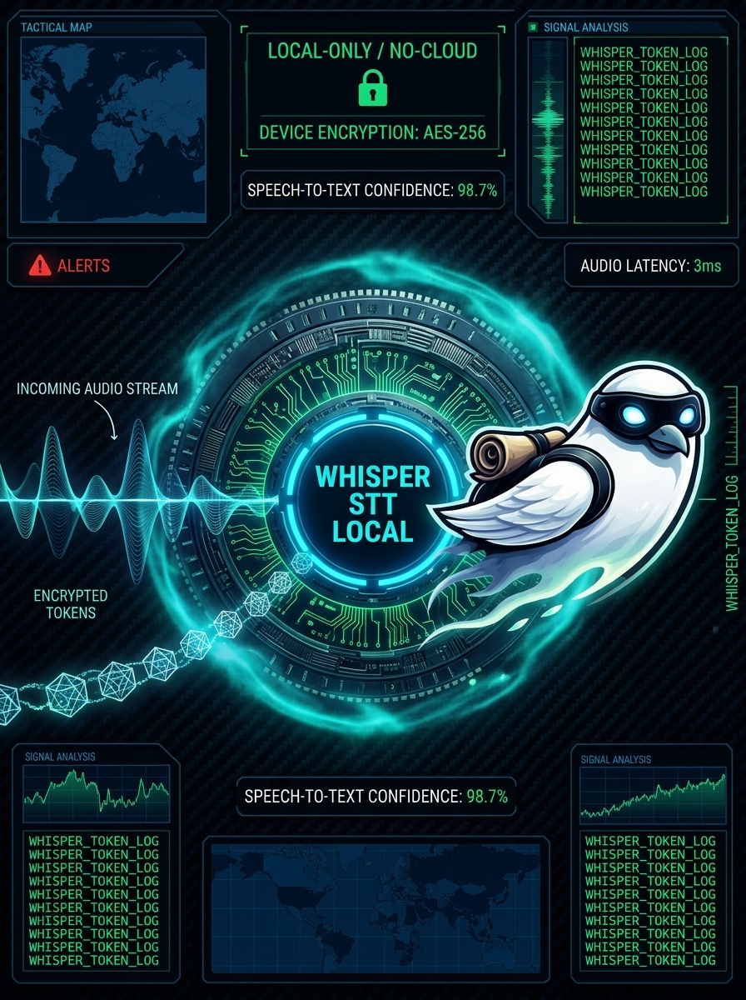
02
Dictée au clavier
Un appui pour lancer, un pour finir, 2 min max. Touchez le panneau pour annuler.
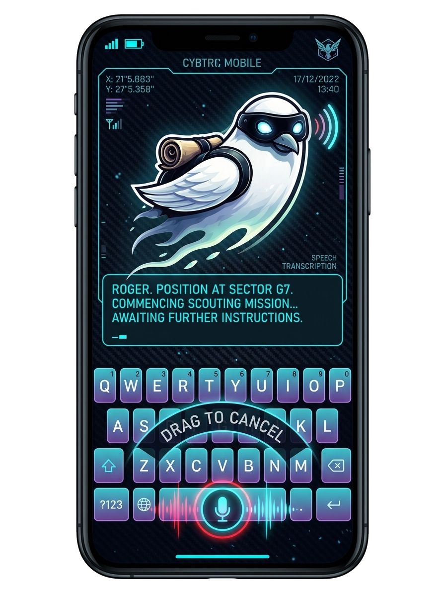
03
Notes vocales
Enregistrez, relisez, transcrivez sur le téléphone ; gardez le tout en note privée consultable.
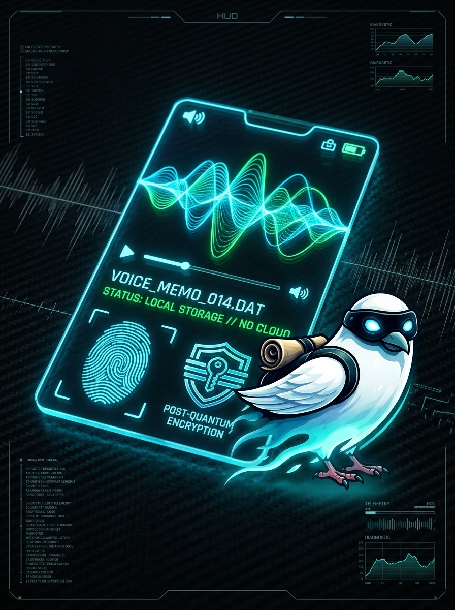
04
Indications de langue
Le mode auto suit la langue de l’appareil ; indiquez une langue pour plus de précision d’une langue à l’autre.
01Capturer
Autorisation du micro demandée au démarrage.
02Fenêtre
L’audio en direct découpé en fenêtres partielles et finales.
03Transcrire
whisper.cpp exécute le modèle STT choisi.
04Relire
Modifiez, effacez ou relancez le résultat.
05Insérer
Dans le chat, les notes, le clavier ou un rapport.
CONFIGURATION
Ce qu’il vous faut
Q-P1NG Pro et un STT AiPack ou un modèle Whisper.
L’accès au micro quand vous lancez la saisie vocale.
Du stockage libre et de la batterie pour l’inférence locale.
CHEMIN AUDIO
Une capture plus propre
L’appli privilégie l’entrée micro brute ou de reconnaissance vocale.
Une pièce calme aide les petits modèles et les longs messages.
Arrêtez la dictée avant de changer d’appli ou de périphérique audio.
CONFIDENTIALITÉ
Relisez avant de partager
Le STT local n’envoie aucun audio.
Une transcription peut encore nommer gens et lieux.
Modifiez ou effacez la transcription avant de l’envoyer.
MODULE: SECURE_VOICE//TRAITEMENT VOCAL SUR L’APPAREIL
Secure VoiceEffets · Dictée · Relecture
Changez de voix, pas de message.
L’enregistreur du chat fait aussi studio vocal. Envoyez votre voix telle quelle ou, avec Pro, ajoutez un effet, dictez avec Whisper, laissez Kokoro lire à voix haute. Tout sur le téléphone ; chaque message s’ouvre d’abord en relecture.
Sur l’appareilEffets vocauxDictée WhisperVoix de lectureRelecture avant envoi
01
Effets vocaux
Ghost, Interview, Robot, Shadow, Studio, appliqués sur le téléphone. Ghost ne transige pas : sans effet, pas d’envoi.
02
Dictée Whisper
Parlez, obtenez du texte : Whisper transcrit sur l’appareil. L’enregistrement reste sur le téléphone.
03
Voix de lecture
Kokoro lit le texte à voix haute avec des voix naturelles italiennes et anglaises, hors ligne, sur le téléphone.
04
Relecture obligatoire
Réécoutez avant d’envoyer. Ajoutez une transcription Whisper (Pro), puis modifiez-la ou supprimez-la.
CAPTURERenregistrez un message vocal
FAÇONNERvotre voix ou un effet
ÉCOUTERréécoutez sur le téléphone
VÉRIFIERtranscription locale optionnelle
ENVOYERchiffré de bout en bout vers votre contact
NOTE
Un effet masque la voix, pas la personne : les mots choisis, les bruits de fond et le contexte peuvent encore vous identifier.
La dictée utilise Whisper d’OpenAI (MIT). Les voix de lecture utilisent Kokoro 82M de hexgrad (Apache 2.0).
QUANTUM P1NG//MODULE : Q-SDR
Q-SDR
L’air est chargé de données. Lisez-les.
PRO · RÉCEPTION SEULE
Branchez un HackRF ou un RTL-SDR sur votre téléphone : spectre, décodeurs et IQ brut, dans Q-P1NG Pro. Tout ouïe. L’émission reste verrouillée.
L’historique du signal qui défile, salve après salve.
Détection de signaux
Signale l’activité dans les bandes radio, de contrôle de drones et inconnues.
Vigilance RF
Repérez passivement un émetteur inhabituel près de vous.
SPECTRE
DÉMO
VHF433 M868 M2.4 G5.8 G
WATERFALL
VITESSE : MOYENNELARGEUR MAX : 20 MHz
FRÉQUENCE CENTRALE
2.412 000GHz
PAS : 100 kHz
20.0 MHz
+28 dB
−60 dB
USB-OTG // SANS ROOT // RÉCEPTION SEULE
Apportez votre SDR
En USB-OTG, sans root. L’IQ arrive en flux ; gain, démodulation et DSP tournent sur le téléphone.
ÉMETTEUR-RÉCEPTEUR // APPLI EN RX SEULE 1 MHz – 6 GHz
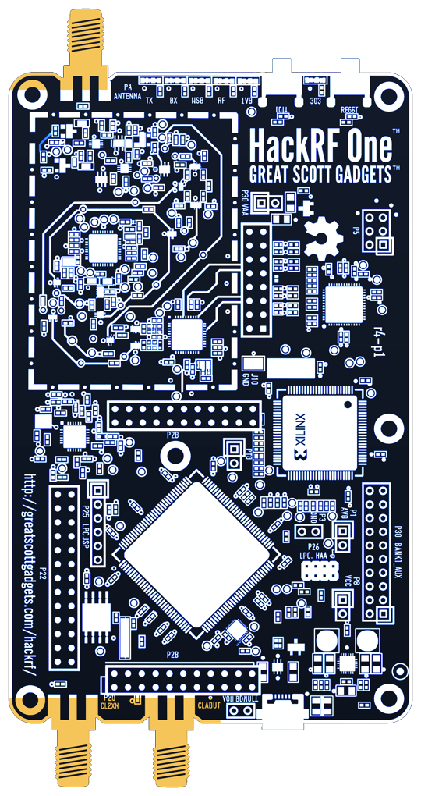
MODE D’AFFICHAGE
HackRF One
GREAT SCOTT GADGETS
Half-duplex, de 1 MHz à 6 GHz. Q-P1NG l’utilise en réception seule : émission et rejeu sont bloqués dans le code.
FRÉQUENCE :1 MHz – 6.0 GHz
BANDE PASSANTE :20 MHz en direct
OPÉRATION :Réception seule (TX bloquée)
CHIPSET :LPC4320 + MAX2837 + Xilinx CPLD
ÉCHANTILLONNAGE :2–20 Msps, I/Q 8 bits
INTERFACE :USB 2.0 High-Speed (OTG)
ADS-B 1090MHzScanner de fréquencesDétection ISM sub-GHzBandes RC de dronesJournal IQ brut
RÉCEPTEUR // TCXO 24 MHz – 1.766 GHz
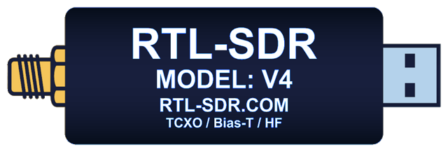
MODE D’AFFICHAGE
RTL-SDR Blog V4
RTL-SDR.COM
Récepteur à faible bruit avec un TCXO 0.5 PPM. Q-P1NG l’accorde dès 24 MHz, Bias-T et échantillonnage direct HF désactivés.
FRÉQUENCE :24 MHz – 1.766 GHz
BANDE PASSANTE :Jusqu’à 2.5 MHz (2.4 MHz stable)
OPÉRATION :Réception seule (RX)
CHIPSET :Realtek RTL2832U + Rafael Micro R828D
HORLOGE TCXO :0.5 PPM, compensé en température
BIAS-T / HF :Sur la clé, désactivés dans Q-P1NG
AIS marine VHF ACARS 131.5MHz APRS 144.8MHzSynchro de ligne NOAA APTUSB sans root
DÉCODEURS DE PROTOCOLES // DSP SUR L’APPAREIL
Des décodeurs dans votre poche
Protocoles de l’aviation civile, de la marine et radioamateurs depuis un RTL-SDR ou un HackRF. Suivez avions et navires, lisez les en-têtes ACARS, captez l’APRS, avec tout le DSP sur le téléphone — sans cloud.
CLASSE DU DÉCODEUR :AdsbAircraftTracker.kt • AdsbModeSDecoder.kt
LIAISON MATÉRIELLE :USB-OTG • libusb • sans root
ASSISTANCE SATELLITE // PRO//SUIVI DES PASSAGES TLE ET STATION AIOC
Q-Sat et station GhostWave
Levez les yeux. Tendez l’oreille.
Les satellites LEO passent à 7.5 km/s et entraînent leur signal hors fréquence. Q-Sat (Pro) planifie le passage à partir d’un TLE, montre où viser et transmet à Q-SDR la fréquence corrigée.
Propagation d’orbite TLE / J2 Accord corrigé de l’effet Doppler Carte du ciel polaire Synchro NOAA APT et IQ Meteor LRPT Détection APRS et SSTV de l’ISS PTT matériel AIOC
VITESSE ORBITALE7.52 km / sPassage LEO, ~820 km d’altitude
DÉCALAGE DOPPLER±4.2 kHzCorrigé avant l’accord de Q-SDR
CIBLETOUT TLEL’ISS, ou tout TLE que vous chargez
PONT ÉMETTEUR-RÉCEPTEURAIOC USB-CAudio STM32 + PTT façon CM108
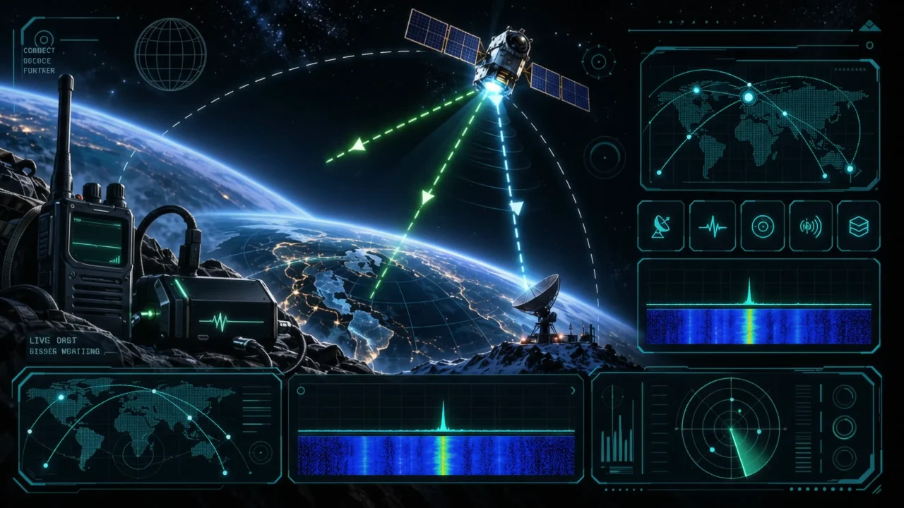
TRACE ORBITALE EN ATTENTE
▶CLIQUEZ POUR LIRE
LIAISON DESCENDANTE SATELLITE LEO SUIVI DES PASSAGES TLE VECTEURS AZ/EL POLAIRES STATION GHOSTWAVE AIOC
PRÉDICTEUR ORBITAL // MOTEUR TLE J2
Visez avant qu’il se lève
Passages calculés à partir des TLE sur le téléphone, hors ligne. La carte du ciel donne azimut et élévation pour votre Yagi.
NOAA-18 et NOAA-19 ont été retirés en 2025 ; leurs passages ici sont des démos historiques.
> HID Report Descriptor chargé : IOMUX0 associé à PTT1
> Système prêt pour les modes numériques.
Q-P1NG PRO//GHOSTWAVE RADIO
RADIOBRIDGE
Hors réseau. Sur les ondes.
GhostWave (Pro) fait d’un téléphone et d’un câble audio USB un modem paquet K1 : l’AIOC actionne le PTT, le CM108 ouvre le VOX. Texte en clair par défaut. Émettre exige une licence là où la loi le prévoit.
MODE TEST EN CLAIRAUDIO USBPTT / VOXSECURE LAB SUR ACTIVATION
MATÉRIEL ACTIFPTT SÉRIE AIOC
LABO PRÊT
QPTéléphone
Hôte USB Android
AIAIOC
Audio USB + DTR/RTS série
RFRadio K1
Baofeng UV-5R K1
SÉQUENCE TX
Envoi protégé par PTT série
L’audio USB envoie les tonalités AFSK, DTR/RTS pilote le PTT. Arrêt, fermeture ou erreur coupent le PTT.
>mode=AIOC_SERIAL_PTT sampleRate=48000
>ptt=DTR/RTS test=500ms forced_off=true
>packet=QGW TEST_CLEAR crc=CRC16/X25
TEST DE LIAISON RADIO//04 ÉTAPES
Du câble au paquet.
01Audio USB détecté
Le CM108 ou l’AIOC apparaît comme audio USB. Haut-parleur et micro du téléphone restent hors circuit.
02Tonalité 1200 Hz
Vérifiez que la tonalité sort de l’audio USB. Au bon niveau, le VOX déclenche la radio.
03PTT ou VOX ouvert
L’AIOC déclenche via DTR/RTS ; le CM108 ouvre le VOX avec une pré-tonalité et un préambule.
04Réception paquet QGW
Le nœud B reçoit QP1NG TEST 001, vérifie le CRC et journalise la séquence.
VHF / UHF// MONITEUR DE LIAISON RF : BAOFENG UV-5R × SMARTPHONELIAISON RF EN ATTENTE
ÉMETTEUR-RÉCEPTEUR BAOFENG UV-5R TRANSMISSION RF SANS FIL AFSK 1200 BELL 202 LIAISON LABO HALF-DUPLEX
LIAISON RF ILLUSTRÉE // CLIQUEZ SUR L’IMAGE POUR REGARDER
01
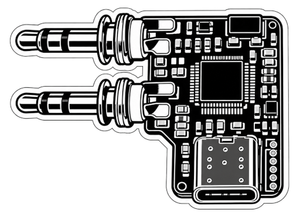
PTT série AIOC
Le chemin le plus court : l’audio USB porte les tonalités, le DTR/RTS série déclenche la radio.
Téléphone -> USB-C OTG -> AIOC -> Radio K1
Test PTT de 500 ms, coupé d’office à la moindre erreur
Radios à prise K1, si le câblage est bon
02
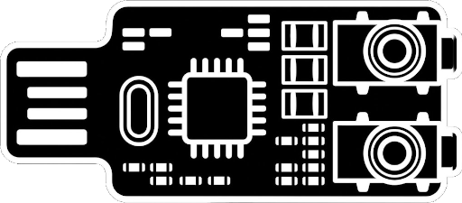
VOX Lite CM108
Pas de ligne PTT : une tonalité ouvre le VOX de la radio, puis la trame AFSK QGW suit.
Trame QGW : magic, version, type, séquence, longueur, CRC16/X25. Types chiffrés uniquement dans le profil Secure Lab, sur activation.
AFSK 12001200/2200 Hz48 kHzCRC OK/FAIL
COMMANDES DE L’APPLI
Le diagnostic d’abord
Init, tonalité 1200 Hz, paquet de test, arrêt. Niveau RX, écrêtage, compteurs et journaux tournants montrent ce que fait la radio.
niveau RXécrêtageenvoyésreçusjournaux
CONFORMITÉ
La licence d’abord
Beaucoup de pays interdisent le chiffrement sur les bandes amateurs : Secure Lab reste sur activation. Avant d’émettre, l’appli vous demande d’en accepter la responsabilité.
texte en clairémission courtesécurisé sur activationPTT coupé
QUANTUM P1NG//MODULE : Q-CALL
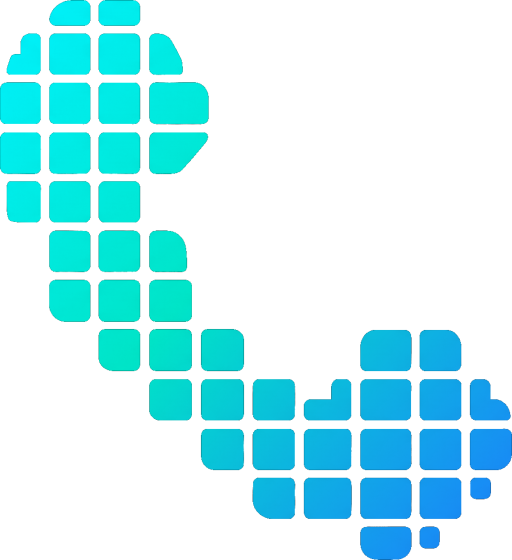
Q-CALL
De pair à pair. Poignée de main post-quantique.
Voix et vidéo, de téléphone à téléphone. Via Tor, les médias transitent par le téléphone appelé ; notre serveur ne répond qu’au STUN. Conçu pour l’ère du « collecter maintenant, déchiffrer plus tard ».
WebRTC post-quantique
DTLS 1.3 avec un échange de clés hybride X25519MLKEM768.
Vérifiez, puis appelez
Rapide exige un contact vérifié. Tor ou Rapide, à chaque appel.
Prêt pour la panique
Micro coupé d’un geste, caméra éteinte, effacement panique qui coupe l’appel.
Visibilité de la route
Un badge indique en direct : médias directs ou relayés.
Appels répondus : aucun journal. Appels manqués : signalés dans le chat.
SESSION DÉMO Q-CALL
CHIFFRÉ
00:12:48
DTLS 1.3ML-KEM hybrideMédias P2P
DÉMO D’APPEL TERMINÉE // SESSION D’EXEMPLE
DÉMO D’APPEL TERMINÉE
Vérifiez le contact, contrôlez la route, raccrochez quand vous avez fini.
VÉRIFICATION DU CONTACTCHOIX DE LA ROUTECOMMANDES DE SESSION
FEED_ENCRYPTED
Capture d’écran bloquée
Filtre de bruit du micro
Permission caméra limitée
Aucun enregistrement cloud
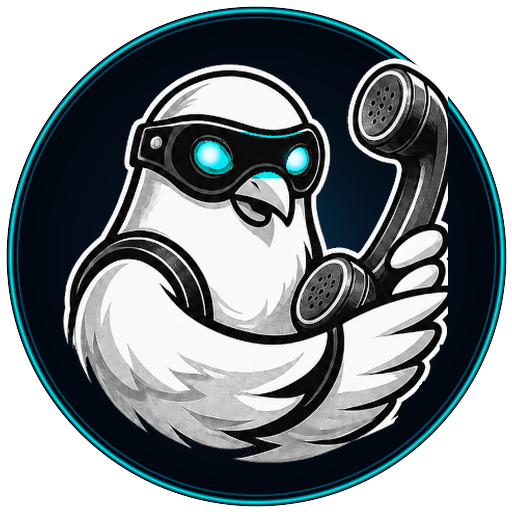
VousProtection caméra
Latence42 ms
Gigue8 ms
Perte paq.0.2%
RouteDirect
NATTraversé
SignalFort
SESSION WEBRTCACTIVE
SignalisationProtégée
IdentitéVérifiée
ChiffrementDTLS 1.3
RelaisTéléphone appelé
Journal d’appelsManqués seulement
ServeurSTUN seulement
Appareil A
DTLS 1.3
Appareil B
CHECK-LIST OPSEC
Clé du contact vérifiée
Route choisie : Tor ou Rapide
Permission micro limitée
Permission caméra limitée
Captures d’écran bloquées
Geste panique prêt
Aucun journal des appels répondus
ROUTES
Rapide peut montrer votre IP à votre contact ; Tor la cache mais ajoute de la latence.
// INDICATEURS DE RISQUE DÉMO DONNÉES D’EXEMPLE
Capture d’écranBLOQUÉE
Enregistrement cloudAUCUN
Changement de réseauSURVEILLÉ
Identité du contactVÉRIFIÉE
Journal d’appelsMANQUÉS SEULEMENT
Q-CAST // RADIO PERSONNELLE
Q-CAST
Ne faites pas qu’écouter. Devenez la station.
Micro, musique et jingles, mixés sur votre téléphone et diffusés via Tor. Aucun serveur à louer, aucune plateforme à qui demander.
Diffuser exige Pro, Android 10+ et une connexion Internet. L’écoute est gratuite.
Q-CAST // 00:08CLIQUEZ POUR LIRE
Animez votre émission
Parlez en direct, enchaînez morceaux et fondus, lancez six pads de jingles. La musique baisse quand vous parlez.
Choisissez votre portée
Gardez l’audio sur Tor ou ouvrez-le à un relais web. Aucun serveur Q-P1NG requis.
Soyez trouvé à vos conditions
Ajoutez un nom et un visuel. Une fiche publique et un repère sur Q-Globe : à vous de décider.
DU STUDIO AU GLOBE
Une voix devient une station.
01
Construisez votre son
Réglez le micro, chargez votre musique, assignez les pads de jingles.
02
Passez à l’antenne
Lancez la diffusion via Tor et surveillez connexion et niveaux.
03
Choisissez d’être trouvé
Publiez une annonce ; épinglez un lieu sur le globe si vous voulez.
04
Laissez le public écouter
Les auditeurs vous trouvent dans Q-P1NG ou sur le globe web.
Q-CAST // 00:48 Cliquez pour lire
Explorez les stations de radio, puis lancez votre propre diffusion Tor avec morceaux, fondus et jingles.
Thème Ghost Pro. Les stations de l’annuaire et le trafic des répéteurs sont simulés et signalés comme tels ; la diffusion du studio est réelle, non listée, via Tor. Attentes coupées au montage.
Une station pour quelques-uns : jusqu’à trois auditeurs directs via Tor, sans serveur à louer.
Écoute dans Q-P1NG ou Tor Browser.02 / RÉPÉTEURS AUTORISÉS
Partagez la charge
Vos propres nœuds ou ceux de bénévoles relaient le flux : les auditeurs ne sollicitent pas tous votre téléphone.
Leur bande passante fixe la taille de l’audience.03 / VOTRE SERVEUR ICECAST
Apportez votre serveur
Envoyez l’audio du studio via Tor vers votre serveur Icecast ; les auditeurs utilisent son adresse publique.
Votre serveur ou votre hébergeur assure la diffusion.
Q-GLOBE // DÉCOUVRIR ET ÉCOUTER
Q-GLOBE
Branchez-vous sur la planète.
Faites tourner le globe, choisissez un lieu, écoutez ce qu’il entend : radios du monde, stations Q-Cast, actus, TV en direct. Dans l’appli, il suit votre mode Tor.
NOYAU IA Q-BRAIN//PRO // LOCAL D’ABORD + OUTILS SOUS CONTRÔLE
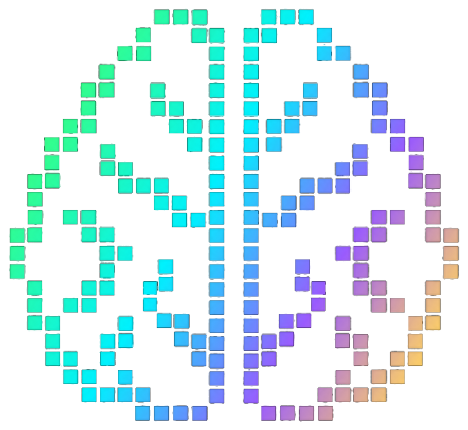
Q-AI
Le cloud, c’est l’ordinateur de quelqu’un d’autre. Q-Brain tourne sur le vôtre.
Q-Brain (Pro) fait tourner des modèles sur votre téléphone : GGUF pour le chat et la vision, Q-Dream pour les images. Fournisseurs en ligne seulement avec votre clé. Nécessite des modèles téléchargés et un téléphone qui suit.
GGUF localAiPacksRouteur de fournisseursBac à sable · Pro du site webValidation humaineHUGGING FACE ↗
COUCHE DE MODULE ACTIVEQ-BRAIN LOCAL
RÈGLES PRÊTES
Q-BRAIN // NEURAL_CORE_ONLINE
DÉMO // CLIQUEZ : LECTURE OU PAUSE
VISITE DE L’APPLI
Demandez à Gemini de trouver une note locale.
00:00 / 01:03
RÉSUMÉ SYSTÈMECOUCHE 01 // NOYAU LOCAL
Runtime d’assistant privé
Génération, mémoire, vision et appels d’outils sous contrôle tournent sur le téléphone, une tâche de modèle à la fois.
GGUF localAiPack LLMEntrée visionZéro télémétrie
JAUGE DÉMO94%
CONFIGURATION D’EXEMPLELOCAL_RUNTIME
>qbrain.start --runtime local --tools governed
>runtime : modèle local et pack sélectionnés
>Vitesse et contexte dépendent du pack et de votre téléphone.
01
Noyau Q-Brain
Diffuse les réponses sur le téléphone avec mémoire du chat, résumés et entrée d’images.
llama.cpp sur l’appareil
Banque de mémoire et résumés
Limites selon chaleur et batterie
02
Matrice des modèles
AiPacks pour LLM, embeddings, STT, TTS, traduction, vision, images ; vérifiés en SHA-256.
GGUF, quantifications, formats de prompt
CPU, GPU, NPU, MNN, QNN
Backends Whisper, Q-Dream et SD
03
Routeur d’outils
Outils typés pour notes, coffre, état de l’appli, prompts d’image, LoRa et bac à sable.
Niveaux de risque et délais
Regarder la visite de l’appli avec Gemini
Vous confirmez les actions sensibles
04
Bac à sable Linux
Pro du site web uniquement. Alpine exécute commandes et Python derrière des contrôles de règles, de réseau et de chemins.
Modes manuel, demande, auto, labo
Réseau coupé, liste blanche ou ouvert
Motifs dangereux bloqués
05
Q-Scenario
Automatisations : variables transformées, outils ActionForge, requêtes à Q-Brain, tâches dans le bac à sable, résultats journalisés.
Déclencheurs, conditions, journaux
Actions Tor, coffre, Ghost Mode, LoRa
Étapes risquées soumises à validation
06
Gouvernance
Les compétences fixent les outils autorisés et bloqués, ce qui demande votre OK, et un nombre maximal d’étapes.
Restrictions du Ghost Mode
Traces de simulation et journal d’audit
Signalez toute réponse de l’IA
CLIQUEZ POUR LIRE · 720×1280 · 30 FPS
OUTILS QP1NG//NOYAU IA Q-BRAIN//QUANTUM TOOLS
Un outil né d’une conversation.
Décrivez un outil dans le chat. Q-Brain rédige le Python ; vous le corrigez, vérifiez l’écriture du fichier et validez l’exécution dans le bac à sable du Pro site web. Quantum Tools le garde.
ÉTAPE DE LA VISITE EN DIRECT
VITESSE :
Décrivez l’outil personnel que vous voulez créer.
00:00 / 01:01Cliquez sur la vidéo pour lire ou mettre en pause
01
Décrivez l’outil dans le chat
Demande en langage courant pour un calculateur de dépenses
02
Inspectez et corrigez le Python
Votre relecture corrige la somme Food (12.50 + 7.50)
03
Validez l’écriture et l’exécution
Chemin de destination vérifié avant exécution
04
Vraie sortie du bac à sable : 41.20 EUR
Bac à sable Linux PRoot, accès réseau coupé
05
Enregistrez et relancez dans Action Forge
Rangé dans Quantum Tools, réutilisable d’une touche
RUNTIME DES MODÈLES
Local d’abord, cloud en option
Local par défaut. Votre propre clé pour OpenAI, Gemini, Claude, OpenRouter ou toute API de type OpenAI.
localopenaigeminiclaudecustom
SÛRETÉ DES OUTILS
Le risque avant l’exécution
Chaque appel d’outil passe d’abord par vos règles : exécuter, bloquer ou vous demander.
readwritenetworkhardwaredestructive
MOTEUR DE SCÉNARIOS
L’automatisation, avec des freins
Q-Scenario et ActionForge enchaînent variables, notifications, tâches du bac à sable, notes du coffre et LoRa derrière des validations.
qvarsactionforgevaultqbrainlora
Règles d’exécutionBatterie, chaleur et économiseur d’énergie ajustent contexte, threads et taille de lot.
Modes du bac à sableOFF, MANUAL_ONLY, ASK_EVERY_TIME, SAFE_AUTOMATION et AUTHORIZED_SECURITY_LAB, Pro du site web uniquement.
Catalogue de compétencesCompétences sécurité, OPSEC, ingénierie, vision, documents, incidents, outils et radio.
MODULE: Q-DREAM_IMAGE_ENGINE//DIFFUSION SUR L’APPAREIL · PRO
Q-DreamRêvez-le. Créez-le. Gardez-le pour vous.
L’imagination, hors ligne.
Quelques mots en entrée, un portrait ou un monde en sortie, dessiné sur votre téléphone par Q-Brain avec vos modèles téléchargés. Inclus dans Pro. Les images restent locales jusqu’au partage.
Pro · sur l’appareil3 modèles téléchargeablesHors ligne après installation
Q-DREAM // 00:39 ·Cliquez pour lire
D’un prompt photographique à une image CyberRealistic, générée en local dans Q-Brain.
Image : CyberRealistic, générée en local ; Gemini n’est que le modèle de chat. Émulateur Android, thème Eclipse, attentes coupées au montage.
Dans Q-DreamModèles, compatibilité et performances mesurées+
01
Trois modèles
DreamShaper 8 LCM, Realistic Vision V6 et CyberRealistic, convertis et quantifiés pour téléphones par Q-P1NG, sur Hugging Face.
02
Une version par puce
Versions NPU Hexagon pour les Snapdragon récents ; le 8 Gen 1, les puces plus anciennes et les autres utilisent la version CPU int8.
03
Vérifié, à la demande
Téléchargé seulement quand vous choisissez un modèle, en direct ou via Tor ; chaque fichier doit correspondre à son SHA-256.
04
Des conditions claires
Acceptez les restrictions d’usage Open RAIL-M avant le premier téléchargement. Q-P1NG ne revendique aucun droit sur vos images.
PROMPTécrit dans le chat Q-Brain
ENCODERencodeur de texte CLIP
DÉBRUITERéchantillonnage LCM sur NPU ou CPU
DÉCODERTAESD ou VAE complet
GARDERsur le téléphone jusqu’au partage
USAGE RESPONSABLE
Une image générée peut sembler réelle. Étiquetez-la en la partageant, respectez la loi et l’Open RAIL-M, signalez les mauvais résultats.
Modèles : DreamShaper 8 LCM (Lykon), Realistic Vision V6.0 B1 (SG161222), CyberRealistic (cyberdelia), LCM-LoRA et TAESD. Paquets : Q-P1NG/qdream-models, sous la Q-P1NG Q-Dream Model License (CreativeML Open RAIL-M).
Modèles Q-Dream par Q-P1NG. Les exemples de la galerie sont des images générées ; la vidéo montre l’appli en usage.
ÉVÉNEMENT-CONDITION-ACTION // Q-SCENARIOS ET ACTIONFORGE//PRO · QP1NG.FLOW.V1
Automatisez votre OPSEC avant d’en avoir besoin.
Une automatisation Pro qui tourne sur votre téléphone, pas sur un serveur : 18 déclencheurs appareil, réseau, Tor, Bluetooth et horaires, des flux en graphe de nœuds, et un bac à sable PRoot dans le Pro du site web.
Outils et scénarios arrivent uniquement via Tor, vérifiés par rapport à la taille et au SHA-256 du catalogue (des hashs, pas des signatures), et restent sur OFF jusqu’à ce que vous les activiez.
fieldkit.yara_matchMOYEN (BAC À SABLE)
Vos règles YARA, un fichier local : 8 MiB max, délai de 10 s.
MODULE: Q-CAM_PRIVACY_CAMERA//FLOUTAGE SUR L’APPAREIL
Q-CAMCapture confidentielle
Capturez l’histoire, pas les passants.
Photographiez manifestations, sources et documents. Q-CAM masque les visages détectés sur le téléphone et retire l’EXIF ; vous choisissez où va la copie.
DÉTECTION LOCALE DES VISAGESMASQUES D’IDENTITÉSUPPRESSION EXIFVOUS CHOISISSEZ LA ROUTE
Q-CAM // APERÇU PROTÉGÉDEMO_PREVIEW
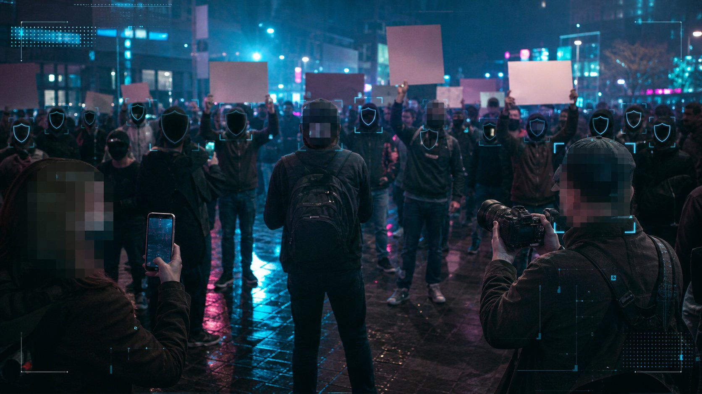
EXEMPLE DE TERRAIN GÉNÉRÉ // VISAGES PROTÉGÉS
▶CLIQUEZ POUR LIRE
FACE_01
FACE_02
MASQUE DE PROTECTIONON
EXIF_STRIPSORTIE PROPRE
RAPPORT DE MÉTADONNÉES
GPSSUPPRIMÉ
MODÈLE D’APPAREILSUPPRIMÉ
DATE EXIFSUPPRIMÉ
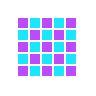
PIXELLISERPixellise chaque visage ; la scène autour reste lisible.
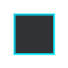
MASQUE NOIRUn bloc plein couvre chaque visage. Vérifiez toute l’image.
ANONYMOUSLe masque Anonymous sur chaque visage, puis vous vérifiez.
MASQUE À GAZUn masque à gaz sur chaque visage ; vérifiez avant de partager.
PIGEONPar défaut : une couverture rapide pour les sources et les passants.
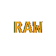
ORIGINALAucun masque. L’appli vous prévient : les visages ne sont pas cachés.
01
Protégez les personnes à l’image
ML Kit trouve les visages sur le téléphone et les masque. Aucun visage détecté, aucune photo enregistrée.
02
Effacez les traces de l’appareil photo
Les photos sont réencodées sans GPS, modèle d’appareil ni dates EXIF. Les noms de fichiers enregistrés portent encore un horodatage.
03
Choisissez la route
Enregistrez dans Téléchargements, brûlez-la, envoyez-la aux contacts Q-NET ou passez-la au partage Android.
04
Sur le terrain
Manifestations, assemblées, rencontres avec des sources, documents : gardez la preuve, pas les visages des gens autour.
CAPTURERpermission caméra + choix du masque
DÉTECTERML Kit sur le téléphone + contours des visages
MASQUERpixellisation, masque noir, aléatoire ou masque
NETTOYERréencodé sans EXIF de l’appareil
ROUTEenregistrer, Q-NET, brûler ou partage externe
NOTE DE TERRAIN
Seuls les visages détectés sont masqués. Vêtements, tatouages et lieux peuvent encore identifier les gens ; vérifiez la copie. Q-CAM ne remplace pas le consentement.
MODULE : DATA_SANITIZER_V2
Les métadonnées sont le message.
Les photos sont réenregistrées sans position ni données de l’appareil ; les vidéos aussi, si vous le demandez. Les PDF gardent les leurs. Ce que montre l’image identifie toujours les gens.
01
FICHIER SOURCE
Partagez depuis toute appli.
02
INSPECTER
Voyez ce que chaque type de fichier garde ou perd.
03
NETTOYER
Photos réenregistrées sans EXIF ; vidéos nettoyées sur demande.
04
EXPORT
Vérifiez la copie, puis envoyez-la ou partagez-la.
4
ÉTAPES
DÉMO
DÉROULÉ D’EXEMPLE
VÉRIFIER
AVANT DE PARTAGER
INTERAGISSEZ POUR INSPECTER
CLEAN.BINVÉRIFIER LA SORTIE
RAW_DATAEXTRACTION DU CONTENU
EXIF_METASUPPRESSION DES MÉTADONNÉES
SOURCE.JPGFICHIER SOURCE
04. VÉRIFIER L’EXPORT
03. NETTOYAGE
02. INSPECTION DES MÉTADONNÉES
01. FICHIER SOURCE
MODULE: OFFLINE_GAMES_V1//ARCADE SUR L’ÉCRAN D’ACCUEIL
Rétro-confidentialitéJeux
Temps mort, hors ligne. Snake, Tetris, Bit Eater, Q-Link et les échecs vivent sur votre écran d’accueil ; seuls les échecs avec vos contacts touchent au réseau.
PHANTOM SNAKE
[ WIDGET_SNAKE ]
Phantom Snake
[WIDGET_SNAKE]
Ramassez les nœuds lumineux, évitez votre queue ; passer un bord vous ramène de l’autre côté.
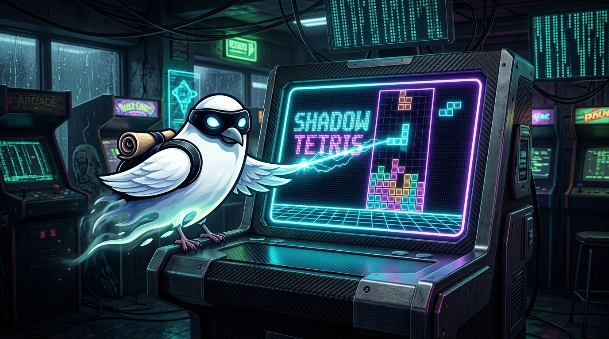
SHADOW TETRIS
[ WIDGET_TETRIS ]
Shadow Tetris
[WIDGET_TETRIS]
Videz des lignes, mettez une pièce de côté par tour ; une ombre montre exactement où elle tombe.
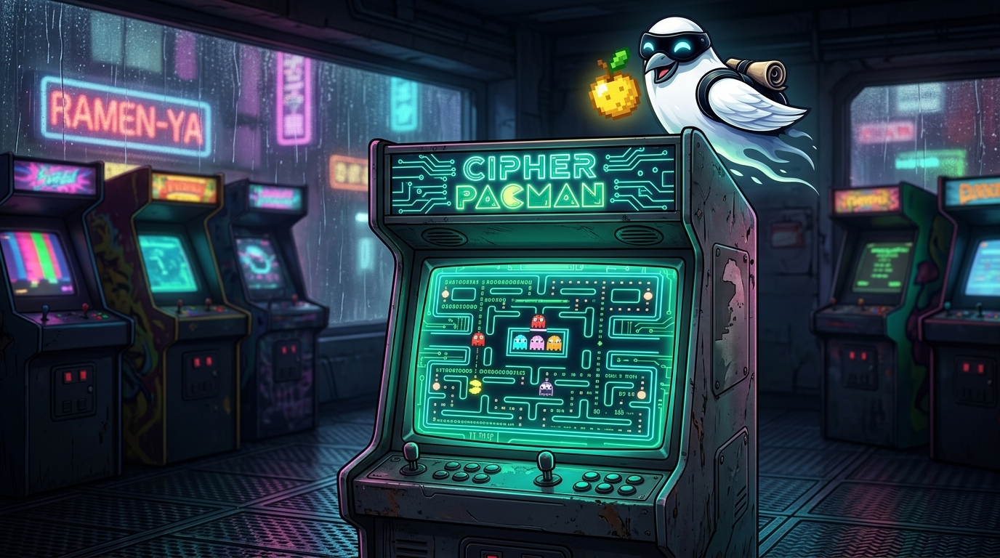
BIT EATER
[ WIDGET_MAZE ]
Bit Eater
[WIDGET_MAZE]
Mangez chaque bit du labyrinthe ; les nœuds d’énergie rendent brièvement les chasseurs vulnérables. Retour haptique activé.
Q-CHESS
[ WIDGET_CHESS // P2P ]
Q-Chess
[WIDGET_CHESS]
Trois niveaux hors ligne, ou vos contacts via Tor, Wi-Fi local ou LoRa (Pro) avec des coups signés et chiffrés.
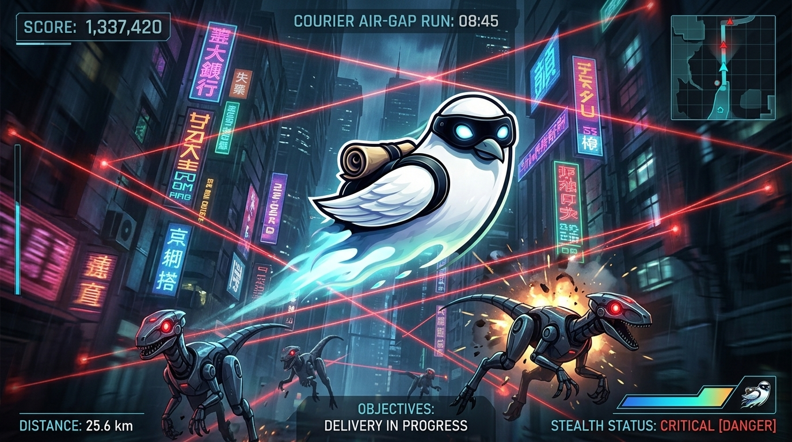
PROJECT: PIGEON
[ BONUS_GAME ]
Project: Pigeon
[BONUS_GAME]
Course-poursuite bonus hors de l’arcade : filez entre murs et raptors robots, tirez, atteignez la sortie.
MODULE: EXECUTION_TIMELINE//REGISTRE D’AVANCEMENT DE L’APPLI
ExécutionChronologie
Livré d’abord. Promis ensuite. Les phases 00–05 sont dans l’appli, la 06 tourne au labo, la 07 est la prochaine.
PHASE_00[ DEPLOYED_CORE ]
Socle OPSEC
Identité, mot de passe maître, sessions de déverrouillage, stockage SQLCipher, effacement panique et sauvegarde chiffrée : la base sur laquelle repose chaque autre couche.
Base SQLCipherQuantumVaultEffacement paniqueSauvegarde sécurisée
PHASE_01[ DEPLOYED_NET ]
Pile de communications privées
Messagerie, services onion, appels, collage sécurisé et dépôts de fichiers, sur le transport que vous choisissez.
Serveur de fichiers TorCollage sécuriséPartage de fichiers sécuriséService Q-Call
PHASE_02[ DEPLOYED_AI ]
Suite IA Q-Brain
Pro : chat llama.cpp, packs de modèles, vision, images Q-Dream et gouvernance des outils, avec des appels d’outils qui tiennent compte du bac à sable.
Runtime llama.cppPacks IAGouvernance des outilsQ-Dream / SD
PHASE_03[ DEPLOYED_TOOLS ]
Quantum Tools et clavier
Recherche via Tor, e-mail temporaire, collage sécurisé, vérification d’URL, outils de mots de passe, un clavier sécurisé et la dictée (Pro).
Ensuite, sans date : décodeurs RF plus robustes, ACK/réessai, registre d’adaptateurs, matrice de tests d’appareils, vitesse, accessibilité et docs de build reproductible.